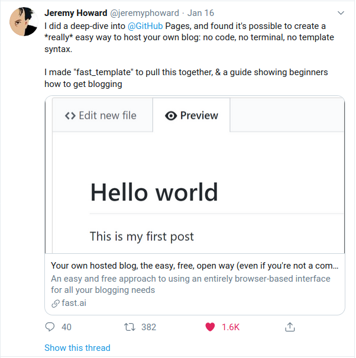

Hello World (10)_final_final.backup
Why blog again?
Hello and welcome to my blog. This is not the first time I'm making one but I hope this time it will stay for longer. Personal websites and blogs have been hard for me to make because I focus too much on the details and when I get stuck on something, it causes me to stop blogging or writing altogether. I've learned ways to cope with this as I've grown but it's still a demon of mine which I'm trying to overcome.
Recent motivation

One reason I decided to start blogging again is I saw Jeremy Howard's where he showed a very easy way to start blogging. Last time I tried hosting my blog on GitHub Pages, it took me several hours to install and google through all the details and I was still not persistent enought to finish it due to a few fights with Ruby. Five minutes after reading Jeremy's post, I am writing this post which should be up by the end of the day. He and Rachel Thomas from fast.ai make a great case for blogging in their respective blogs. Rachel's post on why you should start blogging can be found here.
Another reason for blogging is that it helps you clarify your thoughts and helps you learn writing and whatever you're writing about much better. I want to get better at what I am studying and practicing and this will be part of my path to profficiency.
Also you, the person reading this should start blogging! I want to read your blog! I want to know the cool things you are doing! Just like how Jeremy and Rachel and blogging about cool things, please start blogging! Read Jeremy's tutorial
Who am I and what do I do
My name is Georgi Georgiev and I am a PhD student at Stony Brook University, studying Computer Vision. My current topics of interest are open-world recognition and related topics such as active learning, co-segmentation, incremental learning and scalable learning.
In addition to computer vision, I am a YouTube/Twitch viewer, video game player, Ganondorf main, and many other things. I like reading from various media sources, such as books, manga/manhua/comics/webtoons/, Twitter, Reddit, and more. You will probably see many references to those interests in the blog and I apologize in advance.
I have cycled through various social media and I am currently most active on Twitter. You can follow my rants and drivel (R&D) as well as some actual research talk.